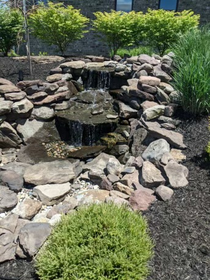
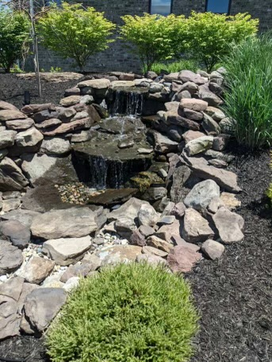
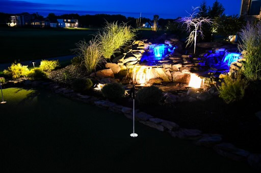
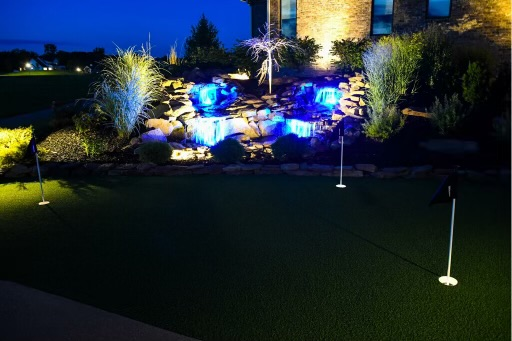
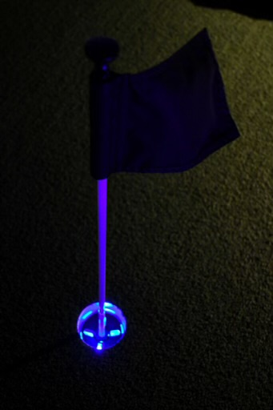
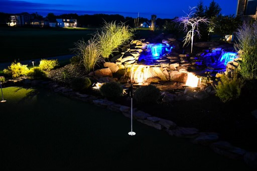
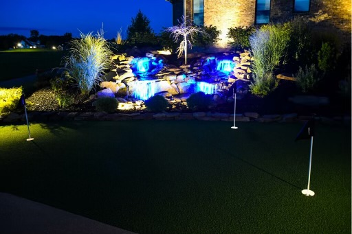
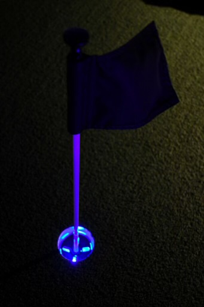

Stones
Chris created the golfer's dream putting experience in this backyard oasis. A custom waterscape surrounding the putting green offers endless relaxation and sounds while the turf green and custom lighting gives family and friends hours of fun day or night. The lush landscaping finishes off this unique space pulling in the spectacular view from this golf course home.
waterfall / plants / putting green / lighting
 

 




